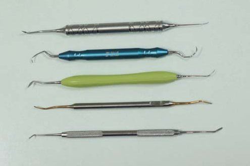
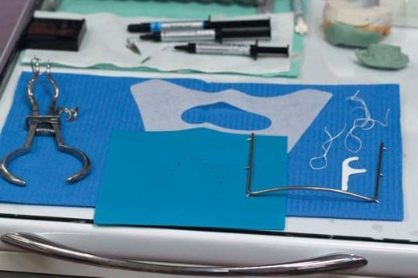
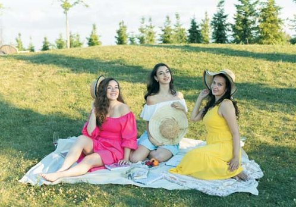
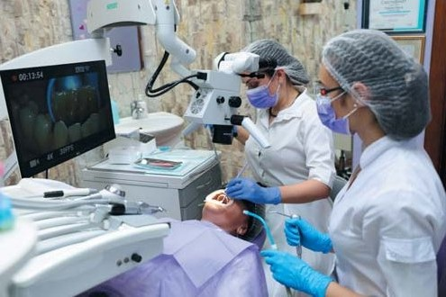
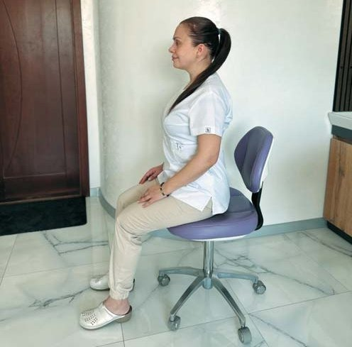
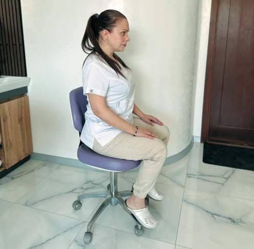
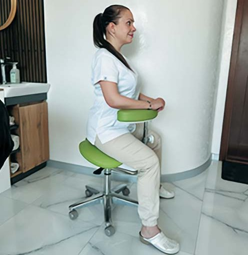

Здоров'я стоматолога · журнал «ДентАрт» 2025 №2
Ергономіка у стоматології: наука, що подовжує професійну діяльність
ERGONOMICS IN DENTISTRY: A SCIENCE THAT PROLONGS PROFESSIONAL LIFE
Професійна діяльність лікаря-стоматолога супроводжується постійними статичними і динамічними навантаженнями, що чинять значний вплив на опорно-руховий апарат, органи зору, нервову систему та загальне самопочуття. Робота в обмеженому робочому полі, необхідність точної моторики і тривале збереження фіксованої пози призводять до розвитку специфічних ергономічних ризиків.
Серед них найпоширенішими є м'язово-скелетні порушення, перенапруження очей, асиметричне навантаження на плечовий пояс, а також підвищений рівень професійного стресу. Однак більшості проблем можна запобігти, якщо правильно організувати робоче місце і техніку роботи. Про те, як це зробити, і йдеться у цій статті.
Вступ
Стоматологія — це професія, що вимагає високої точності, уваги до деталей і тривалого фізичного навантаження. За статистикою, понад 80 % стоматологів упродовж кар'єри стикаються з болями у спині, шиї, руках або очах. Основна причина цього — відсутність ергономічного підходу до організації робочого місця і техніки виконання маніпуляцій.
Термін «ергономіка» дедалі частіше звучить у професійному середовищі. Начебто всім відомий, але що він насправді означає?
Ергономіка — не мода, а наука, яка дає змогу зберегти здоров'я, підвищити ефективність та подовжити активний професійний вік.
Ергономіка — це комплексна наука, що вивчає діяльність людини у певних умовах праці для підвищення ефективності, безпеки та комфорту цих умов. Також це набір міжнародних стандартів щодо умов праці. Ергономіка — це, простими словами, створення умов, в яких людина може працювати ефективно і комфортно. А ергономічність — це властивість речей або процесів бути зручними у використанні для користувача.
Що вивчає ергономіка і чому вона критично важлива у стоматології?
Слід розуміти, що ергономіка є міждисциплінарною наукою, яка вивчає, як адаптувати робоче середовище до анатомічних, фізіологічних та психофізичних особливостей людини. Це наука про адаптацію робочого простору, інструментів і умов праці до фізіологічних та психофізичних особливостей людини з метою зниження навантаження і профілактики професійних захворювань.
У стоматологічній практиці це означає:
1. Ергономічне розташування меблів та обладнання. Робоче місце має бути організоване так, щоб мінімізувати рухи, повороти, нахили. Усе потрібне має бути під рукою.
2. Ергономічні інструменти. Важливе значення мають діаметр ручки, баланс інструмента, а також колірна ідентифікація для швидкої навігації.

3. Виконання маніпуляцій із візуальним контролем через дзеркало. Використання стоматологічного дзеркала для огляду та виконання маніпуляцій у непрямій видимості є важливою складовою ергономічного прийому. Такий підхід дозволяє лікареві підтримувати правильну робочу позу без надмірних нахилів та ротацій голови і тулуба. Робота з непрямим зором «у дзеркало» знижує навантаження на шийно-комірцеву зону і зберігає стабільність хребта, особливо при доступі до дистальних поверхонь молярів.
4. Використання систем ізоляції (рабердам). Саме система рабердам забезпечує стабільне, сухе та контрольоване робоче поле без зайвого фізичного навантаження на лікаря та асистента.

5. Застосування збільшення. Лупи або бінокуляри, а також мікроскоп — це не розкіш, а інструмент для захисту вашої постави, зору та підвищення якості роботи.
6. Робота з асистентом. Стоматологічна практика із залученням асистентів є ергономічною, оскільки дозволяє лікареві працювати у стабільній позі, мінімізує зайві рухи та забезпечує ефективну організацію робочого процесу.

7. Часові межі і перерви. Ергономіка — це також про розумне планування часу:
- перерви між прийомами;
- обмеження тривалості зміни для лікаря і асистента;
- розподіл навантаження протягом дня.
Ці принципи здаються простими, але їх впровадження потребує дисципліни, злагодженої командної роботи та бажання подбати про себе — зараз, а не тоді, коли вже болить.

Г. М. Іващенко і Т. В. Нікітіна (1972) сформулювали основні завдання ергономіки у стоматології:
- Конструювання обладнання, меблів, одягу та інструментарію має враховувати антропометричні вимірювання та анатомо-фізіологічні особливості організму медичного працівника у відповідності з вимогами технічної естетики (дизайн), гігієни праці, техніки безпеки.
- Раціональне влаштування стоматологічних кабінетів та робочих приміщень на підставі науково обґрунтованих нормативів їх площ, висоти, глибини, кубатури, санітарно-технічного благоустрою (опалення, освітлення, вентиляція, кондиціювання повітряного середовища), внутрішньої обробки інтер'єрів.
- Оптимальна організація робочого місця персоналу шляхом розміщення обладнання з урахуванням антропометричних даних та можливості припасування індивідуально за зростом, правильного вибору робочої пози, робочих рухів, механізації та автоматизації обладнання, правильного розміщення апаратів управління і сигналізації на приладах.
- Диференціація ергономічних досліджень відповідно до профілю роботи за спеціальністю (терапевт, хірург, ортопед, ортодонт, медична сестра), виду прийому (дитячий, дорослий), місця роботи (поліклініка, стаціонар, кабінет).
- Удосконалення роботи з кадрами шляхом медичного і професійного відбору залежно від профілю лікувальної роботи (медичні та професійні особливості фахівців, які передбачають певні вимоги до зору, слуху, фізичного розвитку, мануальних здібностей).
- Правильна організація режиму праці та відпочинку, вивчення професійних чинників, зокрема шкідливих для здоров'я, запобігання професійним шкідливостям.
Санітарно-гігієнічні нормативи
Лікарі-стоматологи в залежності від характеру лікувального втручання можуть працювати в положенні сидячи і стоячи (при положенні пацієнта лежачи, напівлежачи, сидячи).
Працювати сидячи рекомендується не більше 60 % робочого часу, а решту — стоячи і переміщаючись кабінетом.
Сидячи мають виконуватися маніпуляції, що потребують тривалих точних рухів при гарному доступі.
Стоячи виконуються короткочасні операції при утрудненому доступі, що супроводжуються значними фізичними зусиллями.
Нині принцип роботи «у чотири руки» має на увазі п'ять компонентів практики (Садовський В. В., 1999):
- Робота сидячи.
- Допомога асистентів.
- Організація та регулювання кожного компонента стоматологічного прийому (попередній аналіз, планування, менеджмент, оцінка).
- Максимальне спрощення робочих моментів прийому.
- Профілактика інфекційних ускладнень (Infection Control).
Не лише «чотири руки», а й «шість рук» — формат із двома асистентами, який забезпечує максимальну ефективність і комфорт, — це принципово новий рівень організації процесу.
Професійна діяльність лікаря-стоматолога супроводжується постійними статичними і динамічними навантаженнями, що чинять значний вплив на опорно-руховий апарат, органи зору, нервову систему та загальне самопочуття. Робота в обмеженому робочому полі, необхідність точної моторики і тривале збереження фіксованої пози призводять до розвитку специфічних ергономічних ризиків. Серед них найпоширенішими є м'язово-скелетні порушення (особливо у шийному, грудному та поперековому відділах хребта), перенапруження очей, асиметричне навантаження на плечовий пояс, а також підвищений рівень професійного стресу.
| Ризик | Причина | Можливі наслідки |
|---|---|---|
| Хронічне м'язове перенапруження | Незручна поза, тривала статика | Біль у шиї, спині, руках |
| Втома зору | Недостатнє освітлення, неправильна дистанція | Головний біль, зниження гостроти зору |
| Психоемоційне вигорання | Високий рівень стресу, недотримання перерв | Зниження якості роботи, апатія |
Постава у стоматології є важливою для ефективного виконання всіх процедур сидячи, зменшує навантаження на спину, шию та верхні кінцівки. Ідеальна поза нейтральна, а суглоби — близько середини повного діапазону рухів.
Ми повинні уникати повторюваних рухів у поєднанні із силовими рухами, незручною позою та недостатнім часом відновлення.
Наступні рекомендації призначені для сприяння правильній постуральній біомеханіці стоматолога.
Основні принципи правильної робочої пози
- Спина пряма — природне S-подібне положення хребта, без нахилів уперед.
- Плечі розслаблені, не підняті.
- Лікті опущені близько до тулуба.
- Кут у ліктях — 90–110°, у колінах — також.
- Стопи повністю стоять на підлозі або на підставці.
- Відстань до ротової порожнини пацієнта — 35–40 см.
- Голова нахилена не більше, ніж на 20° уперед.
- Сидіння ергономічне, з підтримкою попереку.
- Використання оптики (бінокуляри, мікроскоп) допомагає уникати сутулості.


Гарний стілець, з урахуванням побажань ергономіки, повинен мати такі характеристики:
- П'ять опор для стабільності та коліщатка для легкого переміщення по підлозі.
- Його висота має дозволяти сидіти в положенні, коли стегна паралельні підлозі. У зв'язку з цим діапазон висоти сидіння має становити від 34 до 51 см, що дозволяє пристосувати його як для високих, так і для низькорослих лікарів.
- Висота сидіння повинна легко змінюватися.
- Передній край сидіння повинен бути заокругленим.
- Сидіння не повинно бути занадто щільним.
- Довжина сидіння повинна дозволяти щільно торкатися спиною спинки стільця, при цьому коліна не повинні впиратися в край сидіння (довжина сидіння 38–40 см у відповідності з антропометричним даними більшості лікарів).
- Спинка стільця повинна переміщатися і у вертикальному, і в горизонтальному напрямках, щоб можна було торкнутися до неї поперековою ділянкою спини для комфортного сидіння.
- Кут між сидінням і спинкою стільця має становити від 85 до 100°.
Ергономічне положення сильно залежить від підтримки верхніх кінцівок лікаря. Витягнувшись уперед, вони навантажують себе, плечовий пояс та хребет.
Підтримка рук знижує навантаження на плечовий пояс, розвантажує хребет і стабілізує його положення. Сидіння на сідлоподібному стільці забезпечує правильну поставу та здоров'я.

Поради для щоденної практики
- Робіть розминку кожні 2–3 години (5 хвилин достатньо).
- Використовуйте збільшення — мікроскоп або бінокуляри.
- Регулярно міняйте позицію — працюйте сидячи та стоячи.
- Навчайте асистента основам ергономіки.
- Проводьте самоаудит поз на фото або відео.
- Регулярне помірне фізичне навантаження (плавання, йога, стрейчинг).
Висновки
Ергономіка у стоматології — це не просто зручність у роботі, а критичний фактор довголіття професійної діяльності. Хронічний біль у спині, шиї, руках, очах — реальність багатьох стоматологів. Однак більшості проблем можна запобігти, якщо правильно організувати робоче місце і техніку роботи.
Відсутність належної ергономічної організації робочого місця та порушення принципів біомеханіки тіла значно підвищують ризики розвитку хронічного больового синдрому, зниження працездатності та навіть передчасного припинення професійної діяльності. У зв'язку з цим актуальність вивчення ергономічних ризиків у стоматології зростає, адже раннє усвідомлення і корекція шкідливих звичок, а також впровадження ергономічно обґрунтованих протоколів можуть суттєво покращити якість життя та тривалість професійної роботи медичних працівників.
Введення у свою стоматологічну практику основних доктрин ергономіки — це інвестиція у здоров'я та ефективність. Вона дозволяє працювати без болю, зберігати якість послуг і насолоджуватись улюбленою справою роками.
Література
- Приймак В. М., Кисельов В. А. Ергономіка у стоматології. Навчальний посібник. — Харків: НФаУ, 2020. — 98 с.
- Новіков С. І., Лук'яненко Н. М. Ергономічні підходи у практиці лікаря-стоматолога. — Український стоматологічний альманах. 2021;(2):40–43.
- Санна Хакала. Ергономічна робота стоматолога — вирішення проблеми. — ДентАрт. — 2019. — № 3.
- Murphy D. C. Ergonomics and dentistry. N Y State Dent J. 1998;64(9):30–34.
- Gupta A., Bhat M., Mohammed T., Bansal N., Gupta G. Ergonomics in dentistry. Int J Clin Pediatr Dent. 2014;7(1):30–34. doi:10.5005/jp-journals-10005-1229
- Rucker L. M., Sunell S. Ergonomic risk factors associated with clinical dentistry. J Calif Dent Assoc. 2002;30(2):139–148.
- Gupta S., Bhasin A. Ergonomic hazards in dentistry: A review. Int J Adv Res Biol Sci. 2020;7(10):39–45. doi:10.22192/ijarbs.2020.07.10.005
- ergo.place — Що таке ергономічність, цілі, завдання та вимоги до робочого простору та ергономічних меблів.
- Львівський національний медичний університет — методичні вказівки з ергономіки (кафедра терапевтичної стоматології).